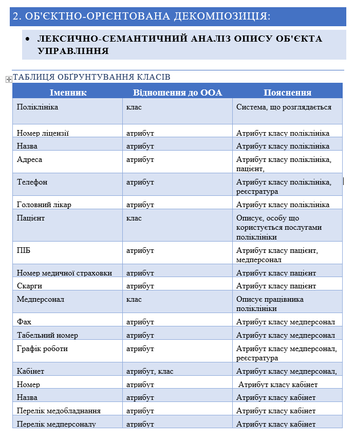
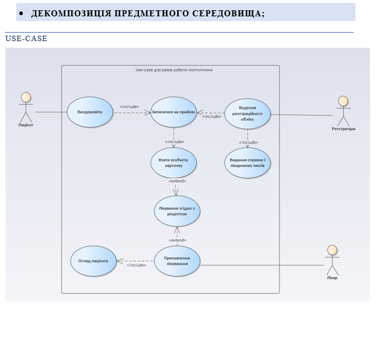
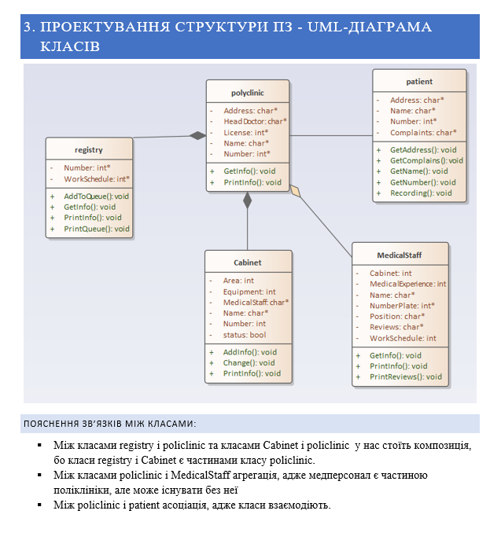

На лабораторній роботі ми описали предметну галузь, зробили лексично-семантичний аналіз опису об'єкта управління(таблицю обґрунтування класів і таблицю обґрунтування методів), побудували діаграму use-case і діаграму класів
Звіти з лабораторних робіт
з дисципліни «Основи розробки програмного забезпечення на платформі .NET»
Роботу виконали студенти групи ІА-93
Start
Тема та постановка задачі:
Тема: ІНКАПСУЛЯЦІЯ. КЛАСИ. ЕКЗЕМПЛЯРИ КЛАСІВ. ОБ’ЄКТНО-ОРІЄНТОВАНИЙ АНАЛІЗ ТА ПРОЕКТУВАННЯ. ДІАГРАМА ПРЕЦЕНДЕНТІВ
Мета:Виконати детальний опис предметного середовища, сформулювати мету розробки проекту, бізнес-задачі, бізнес-процеси, сценарій дій системи.
Здійснити Об’єктно-орієнтовний аналіз та проектування
- Детальний опис предметного середовища (об’єкта управління), що моделюється Кожна людина як мінімум декілька разів на рік відвідує поліклініку. Зазвичай це викликає ряд певних незручностей. Спочатку людина іде в реєстратуру і бере карточку. Відповідно до своїх скарг обирає спеціаліста, який їй потрібен. Далі можливі два варіанти: пацієнт був записаний заздалегідь на певний час або він займає місце у черзі(записується на прийом). У кабінеті лікар оглядає пацієнта призначає певне лікування( ліки ) або радить йому звернутися до іншого спеціаліста.
-
Користувачі можуть самі переглядати часи роботи певних лікарів, без допомоги іншого персоналу. Це допомагає заощадити гроші на заробітних платах працівників та є дуже вигідним вкладенням якщо дивитися з точки зору майбутнього.
Користувачі можуть записуватися на прийоми, відміняти їх в зручній системі, яка не потребує якихось великих знань системи. Тобто кожна людина буде спроможна користуватися таким сервісом.
Поліклініка має номер ліцензії, назву, адресу, телефон, головного лікаря. Пацієнти записуються на прийом до лікарів-фахівців на певну дату і час у певні кабінети. Пацієнти мають ПІБ, номер медичної картки, номер медичної страховки, адресу. Лікарі та медперсонал мають фах, ПІБ, табельний номер, посаду, медичний стаж. Кабінети мають номер, назву, телефон, площу, перелік медичного обладнання. Лікарі назначають пацієнтам лікування у вигляді
Мета розробки проекту (кінцеві результати роботи системи)
Метою проекту є:- Пришвидшення роботи поліклініки
- Оптимізація взаємодії лікаря і пацієнта;
- Зменшення черги у поліклініці.
- Розробка системи враховуючи потреби самих відвідувачів медичних закладів
- Бізнес-задачі, що моделюються в системі, для досягнення мети
Пошук лікаря
створення запису на прийом
Видалення запису на прийом
Перегляд часів роботи лікаря
Вхід/Вихід в систему
Адмін
Редагування інформації про часи роботи лікаря
- Бізнес-процеси, що здійснюються в системі, що моделюється (на основі деталізації задач)
Зареєструватися
Вказати відділеня
Вказати лікаря
Вказати час
Визначити номер кабінету
Створити запис на прийом
- Сценарій дій системи (з т. з. користувача)
- Клієнт заходить до прогами ‘’Поліклініка’’
- Можливі 2 варіанти:
- Він реєструється
- Інформація про пацієнта уже є і реєстрація непотрібна
- Після ідентифікації користувач обирає спеціаліста, до якого хоче звернутися, відповідно до своїх скарг і записується на вільний час.
- На прийомі лікар після огляду призначає лікування.
- Пацієнт має можливість оцінити роботу лікаря.
- Реєстратура видає пацієнту довідку після лікування.
- Є можливість переглянути інформацію про поліклініку, лікарів і кабінети.
- Реєстраційний облік( черги) веде реєстратура.
- Є можливість додавати нову інформацію про поліклініку, кабінети, лікарів.


